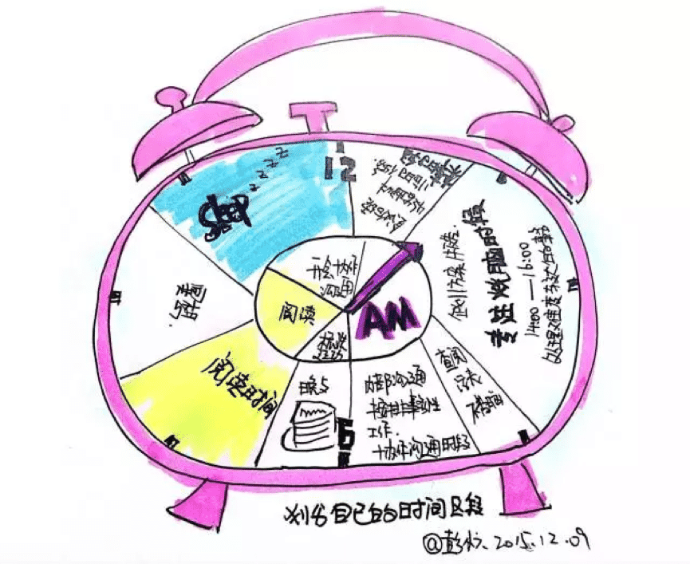
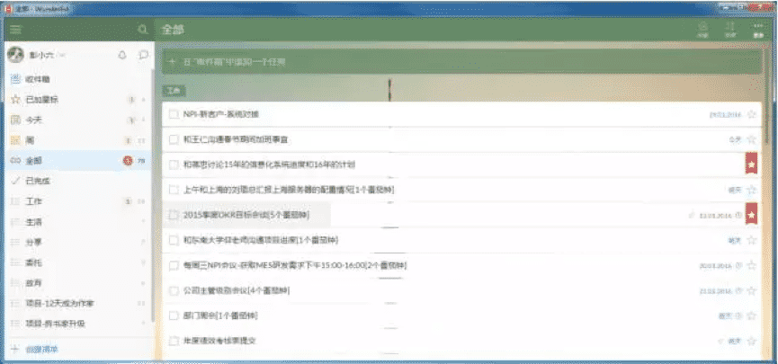
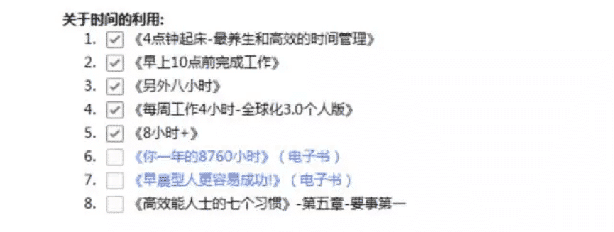

①早起是一种习惯训练
有一本书叫《早起型人更容易成功》，整本书就是为了告诉我书封面那句话。但是如果你也这么认为，那就是中了心灵鸡汤的毒了。没有任何实验和论据能够证明这一点，作者把单一的变量看做整体系统的唯一影响因素，就像我们看到金三胖一家就说胖子更容易成为独裁者一样。
但是我们也确实看到很多大神们是早起型人格啊，比如李开复···· ···
其实也能说得通：
所以早起并不一定能够成功，而是可以训练你的自控力和意志力，让你能把一些很好的东西习惯化而已。
②早上的时间段干扰最少
尝试过很多时间管理的办法，GTD，吞青蛙，番茄钟··· ···这些都是在工作时间里面如何处理事务的办法。
忙的时候，屁股从来没坐热过，闲的时候，坐出疮来。
很多书上说什么要学会如何面对打断，如何保护自己的专注时间。我是做IT的，部门事务，研发讨论，其他部门临时要求，老板喊我去他办公室的时候，我总不能说等会，等我完成这个番茄钟吧？
列任务清单太麻烦，像记账一样记录每个小时的时间太麻烦，吞青蛙太麻烦，做番茄钟太麻烦··· ···这些时间管理的办法都很有效，但是却会消耗我们大量的意志力才能坚持。意志力就像是肌肉力量一样，你拿着杠铃撅半个小时一个小时可以，你一天到晚撅着，意志力就彻底消耗光了。
所以我们发现为什么很多人用时间管理会失败？因为你在强行用意志力进行坚持，当意志力消耗完，你就会进入“去他的”状态，哎呀，坚持不下去了，接下来就随便吧··· ···
那有没有最简单的办法呢？有！
纪元老师在他的《哪有没时间这回事》里面提到了将时间划分为时间段的概念。这个概念其实并是第一次出现，在其他的时间管理书籍比如《精力管理》里面也早提过类似的建议。

将自己每天的时间划分区间
就像是把我们的每个月花销分成了一块一块，时间也是这样，每天就24个小时，如何能够不受干扰又高效的利用呢？
当然是早上起来到你上班的那段时间了。
所以我们看到很多文章和书籍写早起型人格如何如何好，其实就是一个成本选择的问题，他们只是看重了早上成本收益最高，就选择了早上而已。
我们是那么热爱自己暖乎乎的被子，在寒冷的冬季，被子简直比伴侣的的拥抱更暖和（如果你有的话哼）。那我是如何做到的呢？
刚开始为了顺利能叫醒自己，我设置了三个闹钟：
一个智能手环。智能手环的好处在于它是靠在你的手臂上震动那唤醒你的。如果你是和家人在一起或者在宿舍，这种方式就不会吵醒别人。而且相对于铃声，它对睡眠状态的大脑刺激性要相对比较小（个人感觉，没有严重）。
一个手机。手机里面设置一些轻缓的音乐，比如你准备5点钟起来，那就设置4：57的闹铃，用轻柔的声音慢慢唤醒自己。
一个平板。平板的闹铃声音设置要炸裂一些。摇滚，朋克，雷鬼，朋克，怎么爆炸怎么来。这样一来，大脑会有一个意识：哦，麻蛋我得在手机铃声叫的时候就得醒过来，不然后面那颗炸弹要是炸了，后果不堪设想。
如果你要死磕，建议你把平板接到你家音响上。
我不知道起床的痛苦么？我不知道起床后那几分钟内的挣扎么？但是在《精力管理》里面，讲到里一个很好的概念叫“仪式习惯”，什么叫仪式习惯呢？就是把一连串的小动作连接起来。
比如我起床后的“仪式习惯”是这样的：
1.把书房的空调打开
2.把[得到]APP打开听语音
3.刷牙洗脸抹桂花糕
4.喝一杯温开水
5.给六一换水换猫粮
6.KEEP 晨间7分钟锻炼
7.查看墨迹天气
这一连串的需要花费我多少时间呢？不到15分钟。但是对于我刚和被子生离死别的身体来说，这一连串的动作就是一个明显的警示“困什么困？你已经睡了6个小时了，已经够了好么！”
你会说，6个小时怎么够？！你不是说正常人都要睡7-8个小时么？！我用的方法是午休时间补充15-30分钟。不能多，午休超过半个小时大脑会容易进入深睡眠，这样被吵醒，反而会补觉失败，变得更困。我在研发攻坚阶段，经常需要加班，那就会在晚上7点多，再补觉30分钟。
依据呢？可以看看网络上的一些问答
又有小伙伴说，我每天都很晚睡，我怎么起得来？！
确实，如果你很晚才睡，那早起会让你严重睡眠不足，这样就和我们之前早起的初衷背道而驰了。
所以当你决定养成早起的习惯，会“倒逼”你在晚上早一点休息。所以晚上在睡觉前你也可以养成一段“仪式习惯”：
比如睡觉前两个小时洗个热水澡，冥想15分钟，或者到了床上准备刷手机的时候，把手机换成一本有点难度的书？
我就放了好几本思想类的著作在床头柜，读几页就犯困，效果特好。
哇！当你终于爬起来并且做完了晨间热身运动，精神抖擞的状态下。我们就可以好好利用这段我们辛苦开发到的时间段了。你可以从工作，学习和生活几个方面去做一些事情。
检查一遍每日清单
你可以先把每日清单打开，将今天要做的事情都过一遍（当然，最好的方式是在头一天晚上过一遍）

检查每日清单
挑选难度最大的事务
确定今天要做的一系列事务之后，可以尝试去标记今天最难的1件事情。然后利用早上的时间解决掉它。
这其实就是我们今天玩的“吃青蛙”的方式了。当你在一天的开始就解决掉最难的这件事情，你就可以进行从剩下的任务里面再挑一件最难的事情来做了。剩下的做不完也没关系，因为今天你已经把最难处理的事情解决掉了。这一天你已经很有成就感了。
我们往往感到痛苦的是，我们给自己一堆根本完成不了的目标，然后又希望自己能运气极佳全部做完。
所以完成最重要最难的那件事，今天剩下的时间就是你“剩勇追穷寇”啦。
我一般会在早上留一个番茄钟的阅读时间，也就是25分。利用限时的方式，去读一些商业类的书籍。这类书籍因为逻辑结构非常清晰，论点论据明了，非常适合使用快速阅读的方式去了解作者到底要表达什么，为什么这样表达，依据是什么。而且因为早上没有任何干扰，大脑有高度清醒，所以这个时候阅读效果最好。
简书上有很多大神在晒自己做的早餐，让我这种对早餐只满足温饱的人非常羡慕。周六周日，我也会去尝试给心爱的猫咪和女票做一顿营养早餐。
还有什么比一早起来就有好吃的心情更好呢？
最近早起来的书籍市面上也很多，关于如何利用时间的书我就看了下面这些：

利用时间的书单
但是很遗憾，时间不是用来管理的，时间谁都管理不了，它就那么滴答滴啊的一秒一秒的过。
如果我们能学会利用早点这段时间来做一些重要的事情，那即使这一天什么都没干，我们也会觉得很有收获。这就是常说的，专注重要的事，成就现在的你。
那如何能够获得这个时间段呢？唯一的办法就是早起咯。
慢慢来，先不要用巨变，先给自己的起床时间提前半个小时，适应了之后再提前半个小时，直到你觉得可以了为止：“嗯，我原来也这么牛X”。
![]()